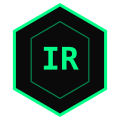
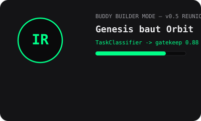

Buddy war nie weg. Wir haben nur vergessen warum wir ihn gebaut haben.
Buddy = Consumer der komplexe Welt einfach macht. Du sagst "Orbit" — Buddy macht TaskClassifier -> EG 4e74a97 gatekeep 0.88 MATCH -> Creator draft. Ohne cat tippen. Das ist IRSANAI.
Genesis Wizard — mit Buddy
Output — cat Blocks fuer Termux (Buddy generiert)
Warte auf Buddy...
Buddy Assets Preview


buddy-icon.svg = Favicon + F12 buddy-builder.svg = Builder Mode buddy-onboarding.webp kommt am Laptop dazu